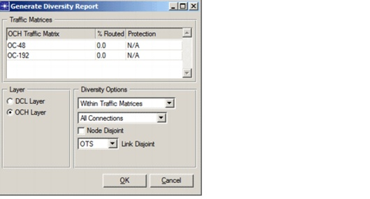
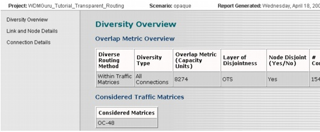

Viewing Network Information > Diversity Report
Diversity Report
To generate this report, choose Info > Export to Web Report > Diversity Report. Next, set the options for calculating the diversity in the resulting dialog, shown in Figure 15-8.
Figure 15-8 Generate Diversity Report Options

Select the layer to consider (DCL or OCH), the traffic matrices on that layer, and the diversity options, as explained in Diverse Routing Algorithm in the Routing chapter. The report gives an overview of the overlap between different connections based on the specified diversity options. The "Overlap Metric" in the report expresses the units of capacity that are overlapping on a particular element (on a link, a node, or the entire network). An example is shown in Figure 15-9.
Figure 15-9 Diversity Report—Diversity Overview

The report contains three pages from which you can select:
- Diversity Overview—Gives an overview of the total amount of overlap in the network based on the specified diversity options. The diversity options are also shown in the overview page.
- Link and Node Details—Gives an overview of the total amount of overlap on each individual node and link, as well detailed information on the connections that are overlapping per node and link based on the specified diversity options.
- Connection Details—Gives an overview of the amount of overlap on each connection of the selected traffic matrices, as well as detailed information on the connections are overlapping with a particular connections, based on the specified diversity options. Also, the diverse connections are reported. These are the connections that do not have any overlap with any other connections, based on the specified diversity options.
Note—The traffic matrices that you select for which to create the diversity report do not necessarily need to be routed with the diverse routing algorithm. You can also calculate the overlap for traffic that has been routed without optimizing the diversity.
| Home © 1987-2007 OPNET Technologies, Inc. All Rights Reserved. This software may be covered by one or more U.S. Patents. See complete patent notice in the Legal Notices section. OPNET Support Center |